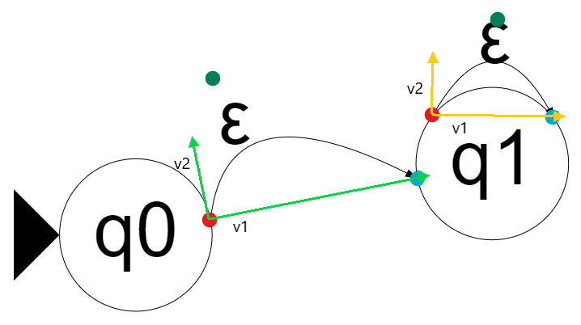

Welcome to flap.js
This is a vanilla js rewrite of the flap.js project. Alternatively, you can consider this a minimal JFLAP clone in javscript so people only need their browser.


Usage
Please refer to the usage.md file.
Repo Setup
- clone this repo
- get Node if you don't have it
cdinto the cloned repo and runnpm install --save-dev
Technical Overview
Machine Representation
To keep things simple, a finite automaton is represented by an adjacency list, and this is the single source of truth. The adjacency list is implemented as a dictionary, with each vertex not only having its neighbors but also some additional information. Here is an example
const vertex = {
x: 640,
y: 360,
r: 24,
is_start: true,
is_final: false,
out: [edge1, edge2, ...],
};
For each edge, if the edge is not a self loop, then this data scheme is employed
const edge = { transition: 'ε', from: 'q1', to: 'q0', a1: 0.4, a2: 0.3 };
Otherwise, the edge is a self loop, and we store two other vectors to make the drawing work
const edge = { transition: 'ε', from: 'q0', to: 'q0', a1: 0.5, a2: 1.0, angle1: Math.pi/2, angle2: Math.pi };
More detail regarding a1, a2, angle1, angle2 will be discussed below.
Drawing
There is no front end frameworks involved. For drawing the nodes, the canvas element from html5 is used. As the name suggests, when drawing on a canvas, we are manipulating individual pixels on the screen. Therefore, most graphical operations require a complete redraw of the screen.
The drawing of edges uses the quadratic bezier curve provided by canvas. We specify the control point relative to where the vertices are placed so that the edges move with the vertices. In the diagram below, the red dot is the start, green dot is the control and the blue dot is the end. Moreover, the control point is stored in terms of the basis v1 and v2 so we get to write the control in terms of where the vertices are placed. The linear combination a1*v1 + a2*v2 gives the coordinate of the control in terms of the standard basis (sans a translation constant).

Now, you may wonder what is the additional angle1 and angle2 when we have a self loop. These two angles are where the mouse left the vertex and where it came back in the vertex. We use these two angles to determine the starting and ending point of the self loop.
Running Input
The simple package currently only has support for NFA (and by extention DFA). We simply do a BFS to see if we can reach a state whose is_final attribute is true.
Serialization
Here we define a standard to represent a graph using a string. The goal is the have the string be as short as possible whilst representing all the information needed to reconstruct the graph.
Representing Vertices
According to "graph_components.js", a vertex is an object of the form
{
name: name,
y: y,
x: x,
r: r ? r : consts.DEFAULT_VERTEX_RADIUS,
is_start: is_start ? is_start : false,
is_final: is_final ? is_final : false,
out: out ? out : [],
highlighted: false // a vertex is lit up during running the machine if it is in the current state
}
- There is nothing better than to keep the name as is.
- Then, for the
x,y, andr, we will round it up to the nearest integer. - We can group together the
is_start,is_finalinto a single character in the string where0means neither,1means start,2means final, and3means both. - We will discard
outandhighlightedsince they are not needed to reconstruct the graph. - We need to put the above together into a string. First, we need to encode each field into a url compatible string according to this document. Then, we will use
:to separate each field. - Finally, for multiple vertices, we will use
;to separate each vertex string. - All in all, the string will look something like this:
name:x:y:r:composite_bit;name:x:y:r:composite_bit;.... I am expecting each vertex to take up roughly 20 characters on average.
Representing Edges
An edge looks something like this:
{
from: from,
to: to,
transition: transition ? transition : get_empty_symbol(),
a1: a1,
a2: a2,
angle1: angle1,
angle2: angle2,
pop_symbol: pop_symbol ? pop_symbol : get_empty_symbol(),
push_symbol: push_symbol ? push_symbol : get_empty_symbol(),
move: move ? move : consts.RIGHT
}
- For
fromandto, we will use the ordering of the vertex in the graph. This obviates the need to wring a long vertex name over and over again. - For
transition,pop_symbol,push_symbol, andmovewe will encode them into url compatible characters and concat them together. Note this does mean that we will enforce each symbol to be a single character. - For
a1,a2,angle1, andangle2, we will round them up to the nearest tenth and then drop the decimal point. - We will put all the above together into a string using
:to separate each field. - For multiple edges, we will use
~to separate each edge string. - All in all, the string will look something like this:
from:to:composite_str:a1:a2:angle1:angle2~from:to:composite_str:a1:a2:angle1:angle2~.... I am expecting each edge to take up roughly 20 characters on average as well.
Permalink
The permalink feature is designed to help users share their work with others. One useful application of this is that instructors can embed a link in their slide for students to play around with the automata. At a high level, the permalink is a url that contains the serialized graph. The url is then parsed and the graph is reconstructed when the page is loaded. In particular, upon page load, we check the url for a #... If it exists, we will deserialize the graph string and add it on top of the history stack. Thus, the new graph will be drawn on the screen.
Documentation
Documentation of the repo is auto generated by JsDoc. Currently, it is set to be run manually npm run doc.